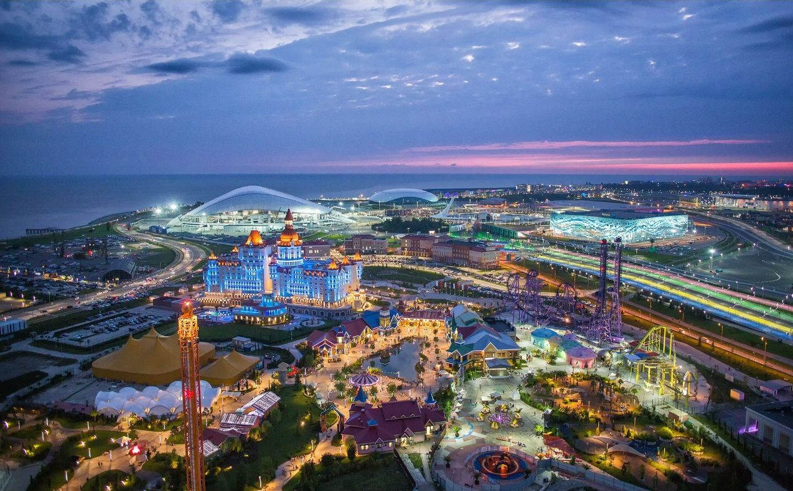
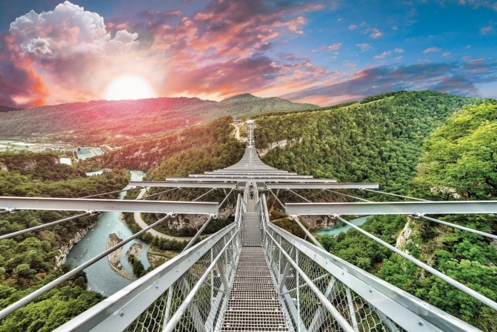
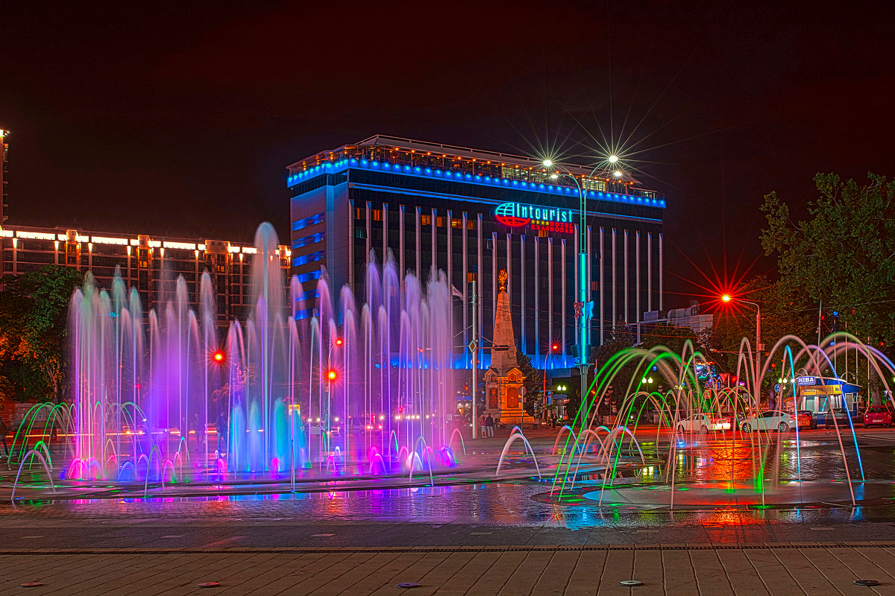
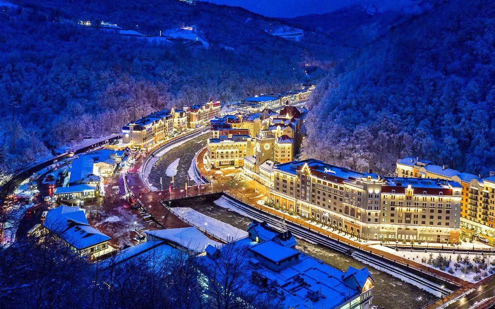

ПРЕДЛОЖЕНИЯ ПО ПРЕДВАРИТЕЛЬНОМУ ГРУППОВОМУ БРОНИРОВАНИЮ
Сочи (Все ночи в отеле Sea Galaxy Congress Hotel & Spa 4*) – гора Большой Ахун – Агурское ущелье – дача Сталина – Мацестинская долина – парк «Южные культуры»* – Красная поляна* – Роза Хутор* – Олимпийский парк* – 33 водопада* – Адыгейское шоу* – Абхазия* (Гагра – озеро Рица – Новый Афон – Новоафонская пещера) – /Самшитова роща*/ + Скайпарк* + форелевое хозяйство**
Скайпарк* – отдых в горах (Роза Хутор, 7 ночей в отеле 4* MERCURE ROSA KHUTOR) – Красная поляна* (трекинг в горах) – Ачишхо* (джиппинг) – Кругозор Ефремова* – Роза Хутор* (трекинг в горах) – Агурское ущелье – дача Сталина – Сочи – Олимпийский парк – 33 водопада* – Адыгейское шоу* – Абхазия* (Гагра фотопауза – Голубое озеро - трекинг к Гегскому водопаду - озеро Рица – Новоафонская пещера) – ущелье Ах-цу* (рафтинг) – форелевое хозяйство*
Краснодар – Свято-Михайловский Афонский монастырь – Майкоп (2 ночи) – Гуамское ущелье* – термальные источники в Адыгее* – Большая Азишская пещера – водопады Руфабго – Хаджохская теснина – Горячий ключ – Большой Геленджик (отдых на море 7 ночей) – Дивноморское – Геленджик – Новороссийск* – Абрау-Дюрсо* – Крымский мост* – Керчь* – Большой Утриш* – Устричная ферма* – полуостров Тамань* (Азовское море) – Вулкан Тиздар* – Долина лотосов* (на выезды в июле и августе) – винодельческое хозяйство* – Кабардинка* – Краснодар
Роза Хутор (3 ночи, Azimut Hotel Freestyle Rosa Khutor 3*) – Красная поляна – Сочи – санаторий им. Серго Орджоникидзе* – дача Сталина* – Олимпийский парк – Поющие фонтаны – 33 водопада* – Адыгейское шоу* – Гагра (6 ночей, Amza Park-Hotel 4*) – Рицинский Национальный парк (Голубое озеро, Юпшарский каньон, озеро Рица) – Команы* – Сухум* – Кындыг* – Пицунда* – Новый Афон* – Новоафонская пещера* – Лыхны* – город-призрак Акармара* – водопад Ирина* – Водопад Великан* – джиппинг «Высокогорная Абхазия»* (Голубое озеро, Юпшарский каньон, озеро Рица, Молочный водопад, Гегский водопад, Ауадхара, альпийские луга) – "Абхазское застолье"*